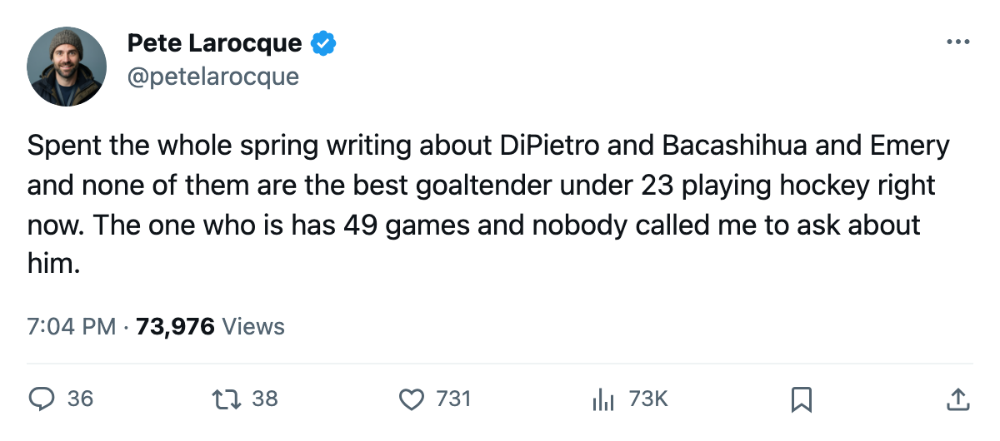
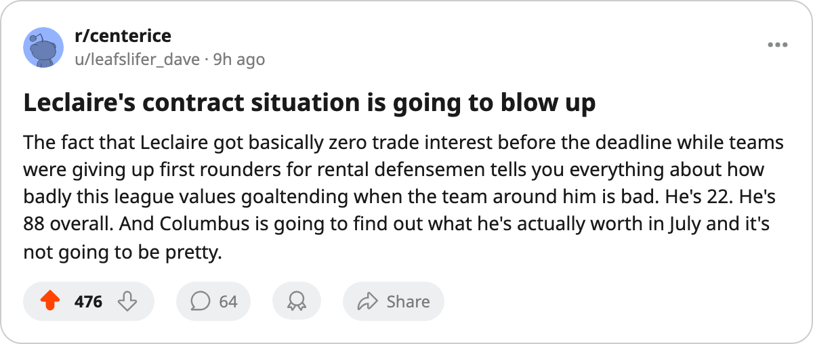

CBJ
CBJ NYI
NYI DAL
DAL NYR
NYR OTT
OTT WSH
WSHThe #8 Pick Has 88 Overall. The #1 Has 84. The #1's Team Made the Playoffs.
Pascal Leclaire leads every goaltender under 23 in the Book's current grade, on 49 games, with a 2.65 GAA. Nobody writes about him because he plays for an 81-point team with an expiring contract.
 Pete LarocqueScouting editor · The Prospect File
Pete LarocqueScouting editor · The Prospect File
The piece
 Pascal Leclaire88 carries the highest overall grade of any goaltender under 23 in this league. He sits at 88, four above
Pascal Leclaire88 carries the highest overall grade of any goaltender under 23 in this league. He sits at 88, four above  Rick DiPietro84, five above Jason Bacashihua83, eight above
Rick DiPietro84, five above Jason Bacashihua83, eight above  Dan Blackburn79. He has played 49 games this season. The next player in that group with a comparable sample is DiPietro at 63 games, who plays in a playoff field and holds a grade six points lower.
Dan Blackburn79. He has played 49 games this season. The next player in that group with a comparable sample is DiPietro at 63 games, who plays in a playoff field and holds a grade six points lower.
The Book has Leclaire's base at 83. The Development Index adds 4, putting his current reading at 88. That puts him +4 alongside DiPietro, Bacashihua, and Josh Harding74 in the goaltender group, but Leclaire's base was the highest of the four to start with. He began the year ahead and stretched the gap.
The numbers nobody in Columbus sees
Leclaire went 23-25-1 this season with one shutout and a 2.65 GAA across 2965 minutes. DiPietro, on 3767 minutes, carries a 2.77 GAA with 32 wins and one shutout. Leclaire stopped pucks at a higher rate on a team that won 26 games. That sentence should bother people.
CBJ finished 26-38-7, 81 points, 5th in the Central Division. They missed the field by 20 points. Leclaire is the best player on that roster by the Book's current grade.  Marc Denis86 sits at 86,
Marc Denis86 sits at 86,  Geoff Sanderson86 at 85. Leclaire is the only man in Columbus wearing a sweater the Bureau rates above 86.
Geoff Sanderson86 at 85. Leclaire is the only man in Columbus wearing a sweater the Bureau rates above 86.
His potential reads 93. That is the highest among under-23 goaltenders with more than 10 games played. DiPietro carries a 99 potential but has played 63 games and still sits at 84 overall. Bacashihua has 90 potential and 1 game. Emery has 97 potential and 3 games. Blackburn has 97 potential and 3 games. The only young goaltender in this league with an elite grade and an elite potential and a full season of work is the one in Columbus.
The money on the table
Leclaire is on $1.10M with 1 year remaining. DiPietro is on the same number, same remaining term. Dan Blackburn, who has played 3 games, is on the same $1.10M. The market for a 22-year-old goaltender with an 88 overall and a 94 potential figure is not going to produce $1.10M again next summer, whatever CBJ does.
His strongest attributes: AGIL 95, GSH 95, SSL 92, SPEE 91. His weakest: FIGH 51, PADL 51, POSI 51. The Book sees a goaltender whose movement and reflexes are elite but who does not open his hips or square up well enough to be consistent from behind. That is a 95-95-92 front end with a 51 back end. The Development Index has him up 4. The base is 83. If the back end moves even five points, this is a 90-plus goaltender.
What the other desks get wrong
The story in this league right now is DiPietro at NYI: the #1 pick, the high potential, the playoff team. He is 84 overall on +4 form, and his 99 potential is the highest number on any goaltender's card in the league. I don't dispute the potential. I dispute the conclusion people draw from it. Leclaire is the best young goaltender playing today, by current grade and by minutes.
Bacashihua has 83 overall on 1 game and a Marty Turco shadow. Emery and Blackburn have 3 games each. Harding has 7. The only under-23 goaltender in this league with a grade above 80 and more than 14 games is Leclaire or DiPietro, and Leclaire is higher by 4 points on a 2.65 GAA to a 2.77.
The June question
CBJ owns 5 picks in the draft, all their own. They have the 12th selection at worst. They have a goaltender at 88 overall on an expiring deal and no other asset in the top tier. If they cannot re-sign him, the trade deadline that passed 35 days ago was their last chance to get something back, and they did not take it. What comes next is a free-agent summer where a 22-year-old with an 88 overall and a 2.65 GAA will find a number well above $1.10M.
The only way Columbus keeps him is if his agent is patient or the market for goaltenders stays soft. The only way the rest of the league gets him is if Columbus misses and a club with cap room calls in July. The best goaltender under 23 plays in Ohio, and nobody paid attention because his team lost 38 games.

